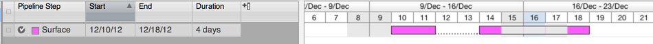
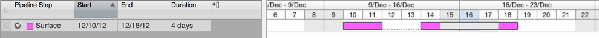

Split Tasks¶
Split tasks can be created and edited via the API but must comply to some rules. Before going further, a good understanding of how Shotgun handles task dates is useful.
Overview¶
The Task entity has a field called splits which is a list of dictionaries. Each dictionary
in the list has two string keys, start and end, who’s values are strings representing dates
in the YYYY-mm-dd format.
[{'start': '2012-12-11', 'end': '2012-12-12'}, {'start': '2012-12-18', 'end': '2012-12-19'}]
- Splits should be ordered from eldest to newest.
- There should be gaps between each split.
- Gaps are defined as at least one working day. Non-workdays such as weekends and holidays are not gaps.
If there are multiple splits but there between two or more splits there is no gap, an error will be raised. For example:
>>> sg.update('Task', 2088, {'splits':[{'start':'2012-12-10', 'end':'2012-12-11'}, {'start':'2012-12-12', 'end':'2012-12-14'}, {'start':'2012-12-19', 'end':'2012-12-20'}]})
Traceback (most recent call last):
File "<stdin>", line 1, in <module>
File "/shotgun/src/python-api/shotgun_api3/shotgun.py", line 600, in update
record = self._call_rpc("update", params)
File "/shotgun/src/python-api/shotgun_api3/shotgun.py", line 1239, in _call_rpc
self._response_errors(response)
File "/shotgun/src/python-api/shotgun_api3/shotgun.py", line 1435, in _response_errors
"Unknown Error"))
shotgun_api3.shotgun.Fault: API update() CRUD ERROR #5: Update failed for [Task.splits]: (task.rb) The start date in split segment 2 is only one calendar day away from the end date of the previous segment. There must be calendar days between split segments.
Alternately, a split value can be set to None to remove splits (you can also use an empty list).
This will preserve the start_date and due_date values but recalculate the duration value
while appropriately considering all workday rules in effect.
How Do Splits Influence Dates And Dates Influence Splits¶
If splits are specified the supplied
start_date,due_dateanddurationfields will be ignored.The
start_datewill be inferred from the earliest split.The
due_datewill be inferred from the last split.If the
start_dateis changed on a task that has splits the first split will be moved to start on the newstart_dateand all further splits will be moved while maintaining gap lengths between splits and respecting workday rules.If the
due_dateis changed on a task that has splits the last split will be moved to end on the newdue_dateand all prior splits will be moved while maintaining gap lengths between splits and respecting workday rules.If the
durationis changed two scenarios are possible- In the case of a longer duration, additional days will be added to the end of the last split
- In the case of a shorter duration splits, starting with the latest ones, will be either removed or shortened until the new duration is met.
Examples¶
Throughout the following examples, each successive one will build on the previous.
start_date, due_date and duration being ignored¶
sg.update('Task', 2088, {
'start_date': '2012-12-06',
'due_date': '2012-12-23',
'duration': 3600,
'splits': [
{'start': '2012-12-11', 'end': '2012-12-12'},
{'start': '2012-12-18', 'end': '2012-12-19'}
]
})
# Task = {
# 'start_date': '2012-12-11',
# 'due_date': '2012-12-19',
# 'duration': 2400,
# 'splits': [
# {'start': '2012-12-11', 'end': '2012-12-12'},
# {'start': '2012-12-18', 'end': '2012-12-19'}
# ]
# }
Result:

Moving the start_date of a split task¶
sg.update('Task', 2088, {
'start_date': '2012-12-10'
})
# Task = {
# 'start_date': '2012-12-10',
# 'due_date': '2012-12-18',
# 'splits': [
# {'start': '2012-12-10', 'end': '2012-12-11'},
# {'start': '2012-12-14', 'end': '2012-12-18'}
# ]
# }
Result:
Moving the due_date of a split task¶
sg.update('Task', 2088, {
'due_date': '2012-12-19'
})
# Task = {
# 'start_date': '2012-12-10',
# 'due_date': '2012-12-19',
# 'splits': [
# {'start': '2012-12-10', 'end': '2012-12-11'},
# {'start': '2012-12-14', 'end': '2012-12-19'}
# ]
# }
Result:

Setting a longer duration¶
sg.update('Task', 2088, {
'duration': 4200
})
# Task = {
# 'start_date': '2012-12-10',
# 'due_date': '2012-12-21',
# 'duration': 4200,
# 'splits': [
# {'start': '2012-12-10', 'end': '2012-12-11'},
# {'start': '2012-12-14', 'end': '2012-12-21'}
# ]
# }
Result:

Setting a shorter duration¶
sg.update('Task', 2088, {
'duration': 2400
})
# Task = {
# 'start_date': '2012-12-10',
# 'due_date': '2012-12-18',
# 'duration': 2400,
# 'splits': [
# {'start': '2012-12-10', 'end': '2012-12-11'},
# {'start': '2012-12-14', 'end': '2012-12-18'}
# ]
# }
Result:

Another example of shorter duration¶
We won’t be using the previous result for this example but rather, the following:

who’s duration we will shorten past the last split.
sg.update('Task', 2088, {
'duration': 1800
})
# Task = {
# 'start_date': '2012-12-10',
# 'due_date': '2012-12-18',
# 'duration': 2400,
# 'splits': [
# {'start': '2012-12-10', 'end': '2012-12-11'},
# {'start': '2012-12-14', 'end': '2012-12-18'}
# ]
# }
Result:

Setting the due_date in a gap¶
When a due date is set in a gap later splits are removed and the day of the due date is considered a day when work will be done.
For this example let’s assume as a starting point the result of the 5th example:
sg.update('Task', 2088, {
'due_date': '2012-12-13'
})
# Task = {
# 'start_date': '2012-12-10',
# 'due_date': '2012-12-13',
# 'duration': 1800,
# 'splits': [
# {'start': '2012-12-10', 'end': '2012-12-11'},
# {'start': '2012-12-13', 'end': '2012-12-13'}
# ]
# }
Result: